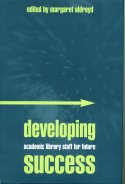

|  |
| About IR |
| Editors |
| Author instructions |
| Copyright |
| Author index |
| Subject index |
| Search |
| Reviews |
| Register |
| Home |
Oldroyd, Margaret. Ed. Developing academic library staff for future success. London: Facet Publishing, 2004. ISBN 1-85604-478-5 £39.95
It's an interesting title. I was attracted by the last two words and wondered what criteria for "future success" the editor and contributors might have in mind. The title led me to believe that this was a book that would suggest such criteria and then demonstrate how staff development would work to achieve those criteria. However, the editor, in her introduction focuses not upon criteria for success but on the undoubted fact that, as academic libraries change, staff will have to acquire new skills and, therefore, staff development programmes will play a role. She notes:
This book looks at the changing higher education library context, both what it is like now, and the contributors' views on the future. It highlights significant issues and current and future role changes, and evaluates the implications of these for skill needs and development routes.
But not a word about how "future success" might be assessed.
In fact, the contributors (all of them well known in the UK, mostly as library practitioners of considerable experience) address a variety of issues relating to staff development: the technological issues (naturally), the convergence of computing and library services as management strategy in universities, assisting the networked learner, collaboration in the delivery of staff development programmes, and more.
In other words, a useful exploration of what is going on, but the lack of a set of criteria for determining future success means that the authors tend to deal with the present, rather than the future. The result is that wheels are re-discovered with amazing frequency and one thing of which we can be sure, however, is that the future will not be the same as the past and the steps taken to correct historic deficiencies are unlikely to serve well for the future. Sheila Corrall looks at "...the new electronic environment, the changing roles that it requires and the consequent implications for staff development." She concludes that, "New competence frameworks are required to reflect the wider skills set, broader knowledge and deeper understanding needed at all levels, particularly in relation to IT, e-learning and e-science developments." I was surprised that her review of the changes did not cite Wilson's paper on re-designing the university library. (As an aside, throughout the book, the citation practice seems to be rather hit or miss - side by side one finds mentions of research or projects that have citations and others that do not.)
Several of the authors review the studies of skills requirements - none of which seems to add anything new to Fayol's analysis of 1916 - in fact, few studies of what the manager needs to know do add anything to that classic work. We have to ask why a project was needed to discover that the management skills set consisted of:
- human resource management
- strategic management and vision
- financial management
- communication and interpersonal skills
- change management
- leadership skills
- negotiation skills
a glance at any management textbook published in the 20th century would have revealed as much.
As a whole, this is a worthy volume of essays and anyone wishing to know what was going on in the way of staff development programmes in university libraries at the end of the 20th century in the UK will find much to inform them. However, a librarian seriously concerned with how to develop staff who can respond effectively to the challenges that will emerge over, say, the next twenty years, will find little that is new. That set of skills quoted above, has been the set of skills required by managers for the past 100 years - all that is different is the emergence of new information and communication technologies, and these are likely to lead to the development of teams with a variety of skills rather than to the multi-skilled librarian. Curiously, the word 'team' does not even appear in the index.
References
Fayol, F. (1916). Administration industrielle et generale. Bulletin de la Société de l'Industrie Minérale, (10), 5-164
Wilson, T.D. (1998). Redesigning the university library in the digital age. Journal of Documentation, 54(1), 15-27.
Henry Fisher
Wolverhampton
UK
How to cite this review
Fisher, Henry. (2004). Review of: Oldroyd, Margaret. Ed. Developing academic library staff for future success. London: Facet Publishing, 2004. Information Research, 9(3), review no. R131 [Available at: http://informationr.net/ir/reviews/revs131.html]